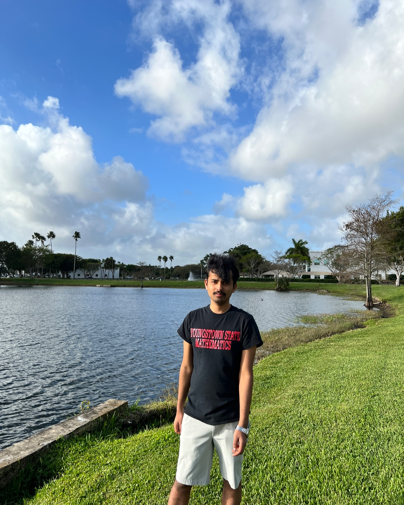

Fourth-year PhD candidate · Mathematics
Est. 2022
Gyaneshwar
Agrahari
A graph theorist at heart and an advocate for education for everyone.

Boca Raton, FL
Fig. 1 — the author, as a graph
hover any vertex
G = (V, E) · |V| = 13 · |E| = 12 · deg(v₀) = 3 · the drawing is planar, naturally.
Three threads
Graphs · Education · Applications
A result I'm fond of
#C₅ ≤ 9n − 50
Located at
30.41° N, 91.18° W